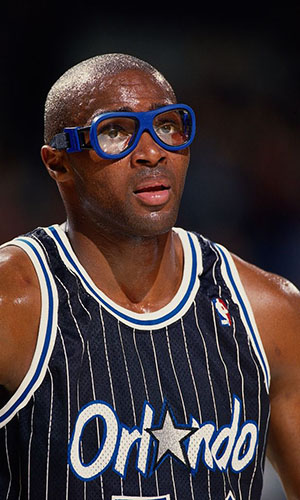

|  |
Матчи |
61 |
|
Передачи (всего/среднее) |
19 |
0.3 |
| В основе |
|
|
Подборы в защите (всего/среднее) |
117 |
1.9 |
| Время (всего/среднее) |
877:50 |
14:23 |
Подборы в атаке (всего/среднее) |
86 |
1.4 |
| Очки (всего/среднее) |
203 |
3.3 |
Подборы (всего/среднее) |
203 |
3.3 |
| 2-очковые броски (всего/среднее) |
81/192 |
1.3/3.1 |
Перехваты (всего/среднее) |
18 |
0.3 |
| 2-очковые броски (% реализации) |
42.2% |
|
Потери (всего/среднее) |
29 |
0.5 |
| 3-очковые броски (всего/среднее) |
0/0 |
0/0 |
Блокшоты (всего/среднее) |
44 |
0.7 |
| 3-очковые броски (% реализации) |
0% |
|
Блокшоты соперника (всего/среднее) |
19 |
0.3 |
| Штрафные броски (всего/среднее) |
41/71 |
0.7/1.2 |
Фолы (всего/среднее) |
96 |
1.6 |
| Джейсон Максиелл |
Штрафные броски (% реализации) |
57.7% |
|
Коэффициент полезности (всего/среднее) |
202 |
3.3 |